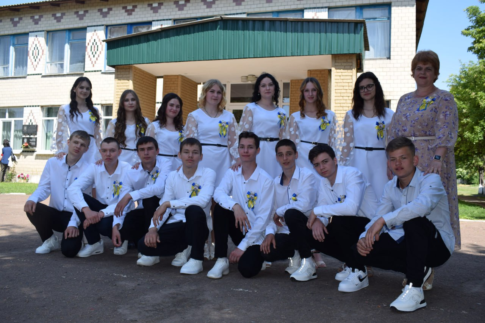
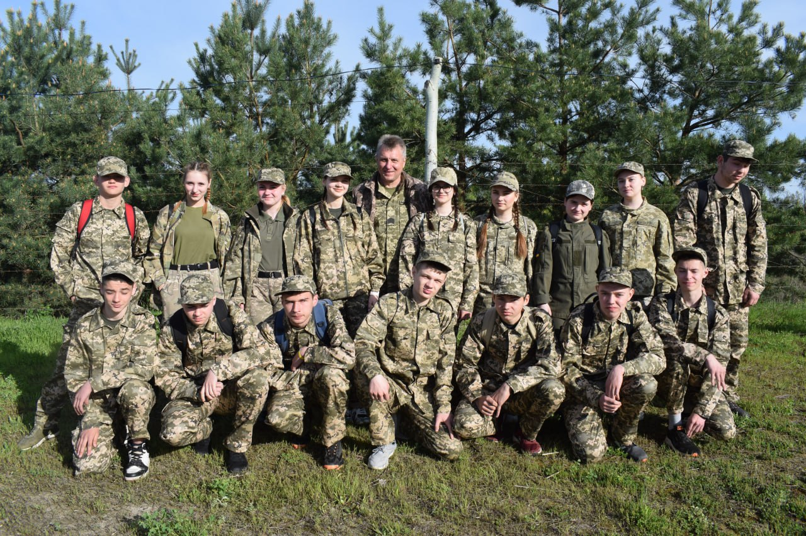
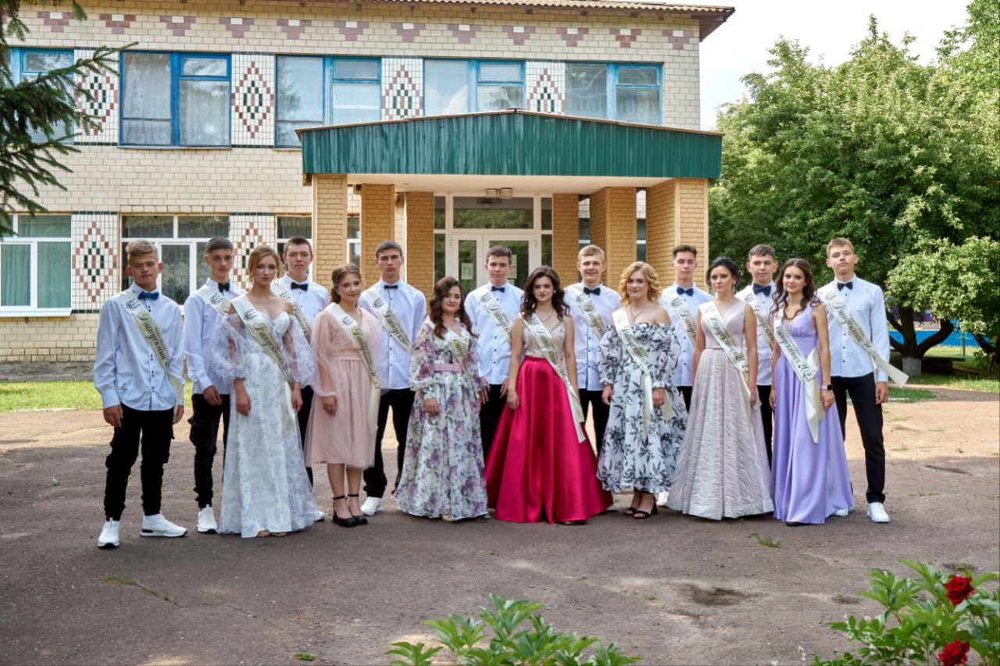

Фото 1: Останній дзвоник
Це фото було зроблено за пів години до початку, на ньому зображені я, мої однокласники і класний керівник.Пам'ятаю, як ми хвилювалися перед виступом, але атмосфера була сповнена радості та легкої ностальгії за шкільними роками. Цей день став символом завершення важливого етапу життя
Фото 2: Шкільні будні
Це я разом із класом і викладачем з Захисту України їздили на польові збори під кінець 11-го класу.Там ми займалися стрільбою, накладали турнікети, розбирали автомати, нам розказували і показували гранати і міни(муляжі) і під кінець цього всьго нам інсценували міні бойові дії, загалом там було дуже цікаво і пізнавально - один знайкращих шкільних спогадів
Фото 3: Випускний
На цьому фото зображений я і мій випускний 11 клас.Це фото було зроблене фотографом за годину до випуского.Усі були в елегантних костюмах та сукнях, відчувалося суміш хвилювання, радості та сум'яття. Цей вечір став урочистим фіналом нашого шкільного життя та символом початку нового шляху
.